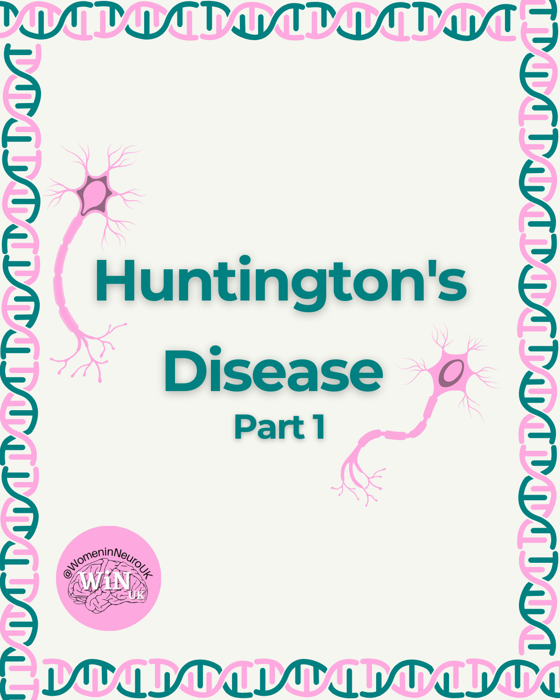

NEW VOLUNTEERS
Welcome to new WiNUK volunteers joining our new Human Resources
subteam!
- Ciara McCready- HR Coordinator
- Kristina Ulicna- Administration
- Amy Boyack- Lead Interviewer
- Sofia Johnston- Volunteer Wellbeing
- Ruta Cakla- Onboarding
EVENTS RECAP
We hosted Stephanie Grönke, a womens' leadership coach to carry out
a dynamic workshop focusing on learn how to tackle imposter
syndrome, embrace feminine traits and take charge of shaping your
career.
Participants engaged in self-reflection and left empowered with
actionable strategies to confidently shape their professional
futures.
If you were there, we’d love to hear how your experience was:
https://docs.google.com/forms/d/e/1FAIpQLSct4JgfIe8SvYcITykFlZnlV5tzqrRckvQmbhc9PI2qu3gTA/
viewform?usp=sf_link
SOCIALS RECAP
Awareness Month:
In May, we covered Stroke Awareness Week and Huntington Disease
Awareness Month, and the gender disparities in research and
treatment development for both conditions.


Equity Issue in Neuroscience Series:
In the latest segment of the Equity Issue in Neuroscience
series, we discussed the important findings from Joyce et al.
(2024) study on gender inequality in academia (with a focus on
STEM subjects like biology and medicine). It’s an important
message on what the authors have coined the "scissor effect",
which illustrates how men and women start equally, but women's
representation declines sharply in later career stages. At
WiNUK one of our main goals is to champion gender equality,
diversity and inclusivity, and as the study emphasizes, we
still have a way to go before achieving this.
Day in the Life (DITL):
Our lovely Instagram coordinator, Rachel, took over this
month’s DITL. Check out what she gets up to as a
neuroscience PhD student on IG or TikTok!
SOCIALS
Are you going to the FENS 2024 conference, in Vienna, Austria?
WiNUK members Abi, Katie, and Rachel will be attending this
year.
Keep an eye out on TikTok and Instagram, where we’ll post some
exciting content during the week (25-29 June).
WINUK’S FIRST LARGE GRANT!
The WiNUK team are thrilled to share that we have been awarded
an
#IBRODiversityGrant
to launch our first independent in-person event!
The
International Brain Research Organization (IBRO)
aims to promote and support neuroscience around the world
through training, teaching, collaborative research, advocacy
and outreach.
Keep an eye out on our socials for more information about this
upcoming in-person WiNUK event! Any guesses on what it might
be?
BLOG
Fancy writing for the WiNUK blog , but not sure what to write about?
Not to worry - the editors regularly put together a collection of
prompts to get you started.
REALITY
Section Editor: Lauren Wallis
- Is Overworking a Requirement in Academia?
- Tackling Impostor Syndrome
RESEARCH
Section Editor: Julia Dabrowska
REVIEW
Section Editor: Rebecca Pope
-
Book Review: ‘Why We Sleep: Unlocking the Power of Sleep and
Dreams’ by Professor Matthew Walker
- Review an event, lecture or discussion!